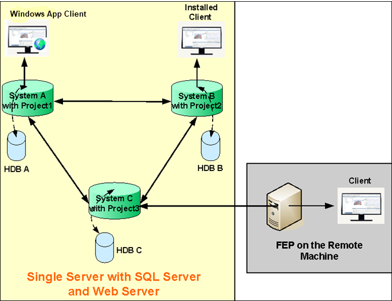
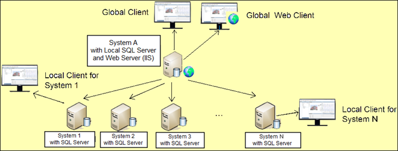

Distributed Systems
The distributed system configuration allows interconnecting several projects that run independently, either on one or several physical machines. The interconnection of the projects allows transparent engineering and operation through them seeing them as one only system. The distributed system configurations extends even further the support of very large systems, increase robustness eliminating single point of failures and allow geographical or discipline segregation.
Depending on the distribution connection (visibility of other projects), a distributed system’s configuration in Desigo CC can be one of the following types.
A combination of these two types is also supported. These types of distributed systems can be deployed on both physical and virtual server computers.
Fully Meshed Distributed System
This is a configuration choice where a single system image providing features equivalent that of the large scale system needs to be obtained.
In this configuration, each server is logically connected to all other servers in distribution. Servers can be geographically distributed. Virtual servers are also supported. Clients (Installed Client, Windows App Client, if web server (IIS) is installed) can access data from all the systems in distribution.
Even if one of the systems in distribution becomes unavailable, all other systems in distribution can still work with each other using the Global user.

Depending on whether the systems (projects) in distribution are located and running on the same single server or on separate servers, there are two types of Fully Meshed Distributed Systems:
Hierarchical Distributed System
This is a configuration choice where some servers (Supervised systems) need to be connected to one head server (Supervising system). Thus the Supervising System has visibility of its own system, in addition to all the Supervised Systems.
Clients connected to the Supervising system can see all objects where as clients connected to supervised systems can only see local objects.
If the Supervising system becomes unavailable, you can still work with all the Supervised systems in distribution by using the Global user.
Compared to the Fully Meshed Distributed Systems, the Hierarchical Distributed System allows more systems.
If one of the Supervised systems is down, it does not affect the distribution. The Supervising system and the other Supervised systems can still continue to work in distribution.


NOTE:
In the distributed systems, disconnecting a system (for example, as a result of stopping the project) is specified as an event in all the systems in distribution.
Upon disconnection, all objects belonging to a disconnected system become unavailable for selection.
Once the system is reconnected, you can fully treat the event generated during disconnection and the Local System is realigned as part of the distributed system.